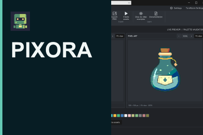
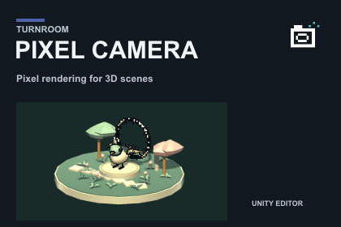
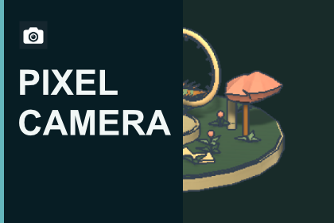
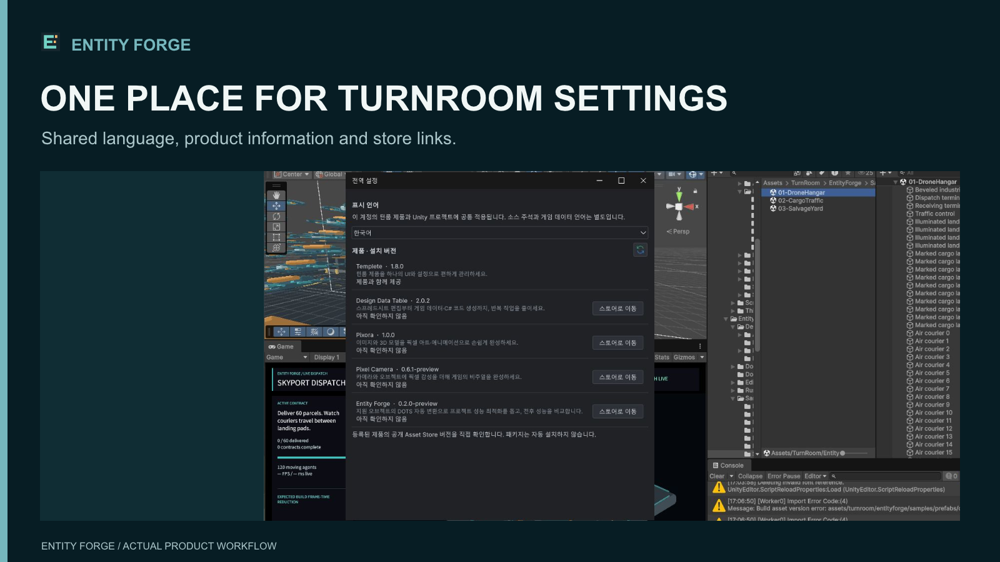
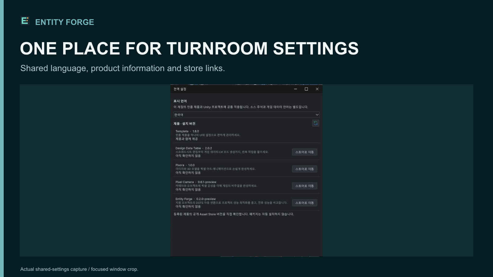
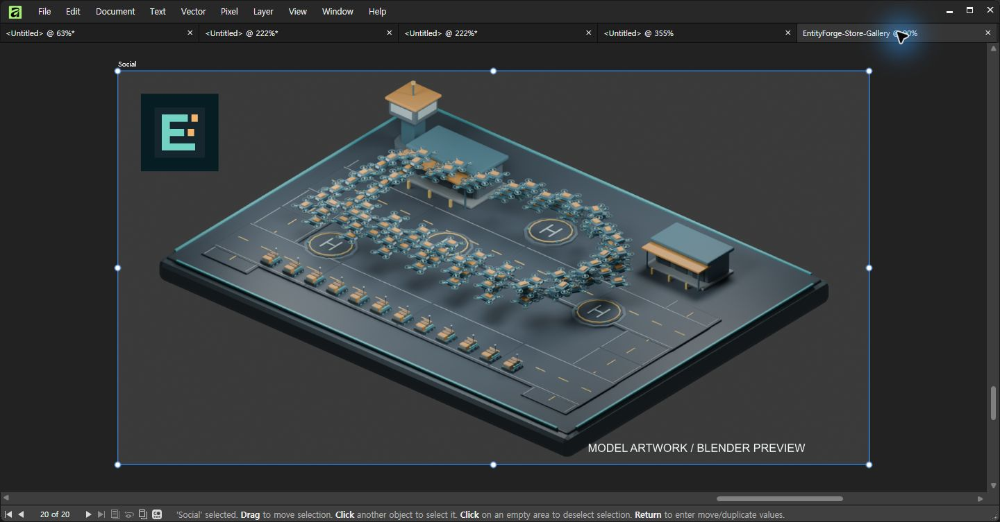

Tracefolio REPORTS & ISSUES
Tracefolio REPORTS & ISSUESDDT 스타일 판매 이미지 60장과 영상 4개 배경음
검증 대기3제품 이미지 각20장·편집 원본3개와4제품 영상 배경음을 제작하고 푸시했습니다. 사용자 청취 승인 완료. 원본2개 재열기와 포털 교체는 대기입니다.
작업 결과
Pixora·Pixel Camera·Entity Forge는 각각 갤러리16장과 키 이미지4장을 준비했습니다. 실제 Affinity 편집 원본3개를 저장했고, DDT를 포함한60초1080p 영상4개에 배경음과 페이드를 적용했습니다. 사용자가 공통 음원 미리보기를 직접 듣고 음원·음량을 승인했습니다. 판매자 페이지 교체·제출은 실행하지 않았습니다.
변경 내용
적용 내용
DDT 레퍼런스의 짙은 배경·큰 제목·실제 결과 화면 구성을 적용했습니다. Pixora는 변환·방향·파츠·애니메이션·작업파일, Pixel Camera는 실제 샘플·픽셀 효과·URP·프리셋, Entity Forge는 빌드 흐름·측정·언어·테마·샘플을 설명합니다. Entity Forge 모델 이미지는 Blender 미리보기로 명시했습니다. 반복 UI와 주변 콘솔이 보이던6장은 실제 Affinity에서 보완했습니다.
카드 출력 전후
Pixora 전 → 후(각420×280).


Pixel Camera 전 → 후(각420×280).


설정 이미지 보완
같은1600×900 출력에서 주변 Unity 화면·콘솔 노출을 제거하고 실제 설정 창 영역으로 제한했습니다.


영상
DDT 영상 · Pixora 영상 · Pixel Camera 영상 · Entity Forge 영상
Cipher — Kevin MacLeod (incompetech.com), CC BY 3.0. 음원 출처 · 크레딧 원문. 홍보용 음악은 고객 Unity 패키지에 넣지 않았습니다.
프로젝트 출시 체크리스트와 AGENTS·TempleteRoadmap에 이미지·음원·권리·청취·포털 재확인 기준을 통합했습니다. 전역에는 화면 포커스와 자원 사용을 별도로 확인하는 규칙을 추가하고 Sync.ps1 Push를 실행했습니다.
검증
검증 근거. 이미지60장의 실제 Affinity 출력 근거·크기·SHA-256과 영상4개의 해시·전체 디코딩을 대조했습니다. 영상 화면은 재인코딩하지 않았으며 원본 비디오 비트스트림 해시가 같습니다. 오디오는48kHz 스테레오AAC, 통합 음량-19.70 LUFS, true peak-4.14 dBTP입니다. 시작0.824초 페이드 구간 외에-50dB/0.35초 기준 긴 무음이 없고 최대 신호-4.6dB로 클리핑이 없었습니다. 네 영상의 오디오 비트스트림 해시가 동일하며 사용자가12초 공통 미리보기를 듣고 승인했습니다. 전체60초 영상의 주관적 청취를 수행했다고 주장하지 않습니다.
Affinity 3.3.1.4940에서 논리 프로세서2개/전체12개와 BelowNormal을 실제 적용했습니다. 이미지당 렌더링1회 후 임시 네이티브 래스터를 재사용·닫는 방식으로 반복 전체 렌더링을 제거했습니다. 최종 기록은 메모리651MB, 응답 정상입니다. 컴퓨터 멈춤의 정확한 원인은 미확인입니다.
Entity Forge 원본을 저장→닫기→재열기 후 아이콘을 다시 출력했고 이전RGBA 해시와 일치했습니다. 소스 커밋 6b6d7d2c는 승인된162개 경로와 일치하고 통합 브랜치 푸시를 확인했습니다.
실제 Affinity에서 저장한 원본이 열린 화면입니다. 화면 속 모델은 Blender 미리보기이며 Unity 실행 검증 화면을 대신하는 자료가 아닙니다.

카드·설정 전후는 실제 출력물 비교입니다. 디자인 앱 조작 전 동일 상태 화면은 미확보입니다. 이미지 원본은 수정 없이 복사했으며 보완 전 설정 이미지는 글자 판독 보존을 위해441KB로 유지했습니다. 나머지 첨부 PNG는200KB 이하입니다.
남은 사항
Pixora·Pixel Camera 편집 원본의 네이티브 재열기·재출력 대조와 판매자 페이지 미디어 교체·저장 후 재열기는 남아 있습니다. 화면 조작 재허용은 Entity Forge 원본 하나에 한정됐으므로 나머지를 임의로 열거나 포털을 조작하지 않았습니다. 기존 실제 Unity 캡처를 재사용했으며 최신 UI 전체 재촬영·9개 언어의 실제 배치 검증을 새로 완료한 것은 아닙니다. 최종 제출하지 않았고 전체 출시 준비 완료로 표시하지 않았습니다. 교훈: 실제 발견한 반복 렌더링·영역 클리핑·자원 제한 검증을 프로젝트에 기록하고, 공통 자원 점검 원칙만 전역에 추가했습니다. 다른 실행 중 대화가 자동 적용했다고 보고하지 않습니다.
작업 시간
- 제안 시간: 최초1
3시간. 저부하 재개 시3060분 예상. - 실제로 완료된 시간: 2026-11-02 17:35:25 KST 시작. 파일 제작·보완·비GUI 검증 고정20:09:17 KST(경과2시간33분52초). 19:20:35~19:43:46 화면 조작 중단 대기23분11초 포함. 소스 푸시 성공20:18:30 KST 확인. 공개 배포는 푸시와 별도 확인하며, 남은 재열기·포털 작업의 전체 완료 시각은 없습니다.
- XERJ: 미사용 — 초기 Xerj.ps1 Status에서 node not running 확인. 매체·파일 대조 중심이며 필요한 범위는 rg와 실제 파일·실행 결과로 확인.